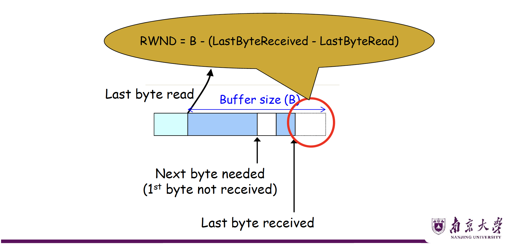
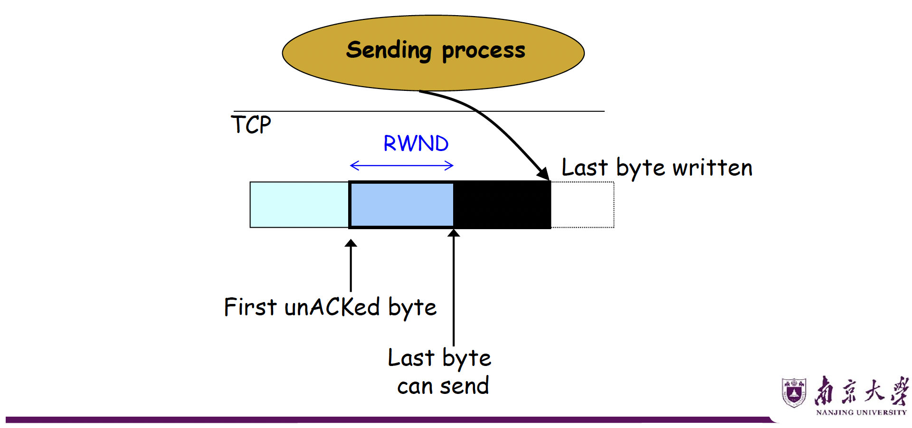
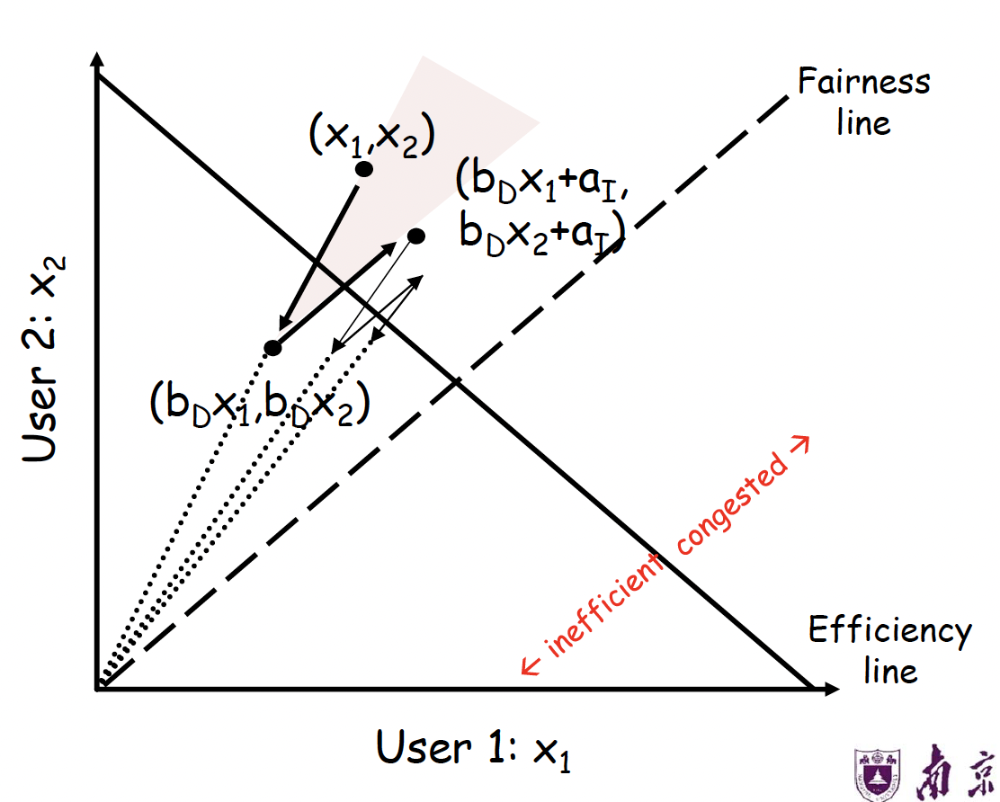
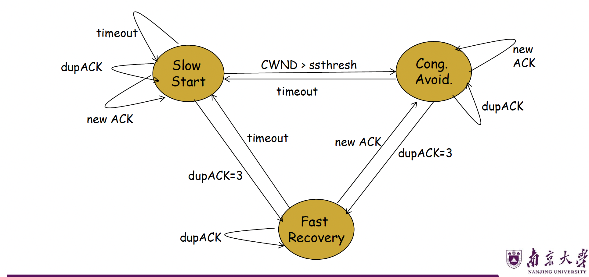

运输层 Part3¶
一、TCP 流量控制（Flow Control）¶
1.1 滑动窗口机制回顾¶
核心思想： 发送方和接收方各自维护一个"窗口"，用于控制数据的发送与接收。
发送方窗口¶
左边界为第一个未被确认的字节（First unACKed byte），右边界为左边界 + 窗口常数（即最多可发送到的位置）。
窗口大小受传输层缓冲区大小限制。
接收方窗口¶
左边界为下一个期望接收的字节（Next byte needed），右边界为左边界 + 缓冲区剩余空间。
若发送方不受控制，可能溢出接收方缓冲区。
1.2 固定滑动窗口的问题¶
| 问题 | 说明 |
|---|---|
| 无法区分丢包与流控 | 接收方停止发送ACK可实现流控，但发送方无法判断是"ACK丢失"还是"流控暂停" |
| 不灵活 | 窗口大小固定，无法动态反映接收方缓冲区变化 |
没收到
ACK这件事有两种可能，一是receiver在做流量控制，二是网络传输出现了问题。
1.3 信用机制（Credit Scheme）—— TCP 的解决方案¶
核心公式¶
其中：
- \(B\)：接收方缓冲区总大小
- \(LastByteReceived\)：最后一个已收到的字节序号
- \(LastByteRead\)：接收进程最后一个读取的字节序号
- \(RWND\)（Receiver Window）：接收方通告窗口，即剩余可用缓冲区

发送方约束¶

Info
图中的Last byte written可能在Last byte can send前，也可能在后。
工作机制¶
接收方在每个ACK中携带 RWND 字段（对应TCP头部的 Advertised Window 字段）；发送方则保证 在途字节数（bytes in flight）≤ RWND。
当收到新的ACK时，发送方的窗口可以往前滑；当当接收应用把缓冲区里的数据读走时，接收方窗口可以往前滑。
注意，UDP协议是没有这一套流量控制机制的。
信用机制的优势¶
- 流控与ACK解耦：可以区分到底是receiver在控流还是网络出现了问题。也支持做更多的操作，比如确认接收数据但不分配发送额度。
- 更灵活的控制：接收方可精细控制发送速率。
- 序号基于字节：每个字节都有序号，窗口控制精度更高。
1.4 TCP 头部相关字段¶
- Sequence Number：本段第一个字节的序号
- Acknowledgment Number (AN)：期望收到的下一字节序号（即已累积确认到此前）
- Advertised Window (W)：接收方当前可接受的字节数（RWND）
当ACK = (AN=i, W=j) 时含义：序号 \(i-1\) 及之前的所有字节已被确认，下一个期望字节序号为 \(i\)，允许发送方继续发送序号 \(i\) 到 \(i+j-1\) 的数据（共 \(j\) 字节）。
1.5 信用分配死锁（Credit Allocation Deadlock）¶
死锁场景¶
- B 向 A 发送：
AN=i, W=0（关闭接收窗口） - B 缓冲区释放后，再次发送：
AN=i, W=j（重开窗口），但此报文丢失 - 此时：A 认为窗口关闭（停止发送），B 认为窗口已打开（等待数据）→ 死锁
解决方案：窗口探测计时器（Window Timer / Persist Timer）¶
- 当计时器超时且未收到任何报文，发送方主动发送探测报文（可以是前一报文的重传）
- 触发接收方重新发送包含最新窗口值的ACK，打破死锁
⚠️ 易错点：UDP 不具备流量控制，数据可能因接收方缓冲区溢出而丢失。
二、TCP 拥塞控制（Congestion Control）¶
这个部分我们主要聚焦网络中间的“路由器/链路”，不让中间的传输链路被拥塞堵爆。
2.1 历史背景¶
- 1981年：TCP 标准化并广泛部署，未考虑拥塞控制
- 1986年10月：互联网出现首次拥塞崩溃（Congestion Collapse）：从LBL 到 UC Berkeley（相距400码，2跳），吞吐量从 32 Kbps 骤降至 40 bps
- Van Jacobson 提出修复方案，开创拥塞控制研究领域
Jacobson 方案的核心思路¶
在已有窗口机制基础上，动态调整窗口大小以响应拥塞，无需修改路由器或应用程序，仅需修改 TCP 实现的少量代码。
至今仍被广泛研究改进（尤其在数据中心场景）。
2.2 拥塞控制的关键设计问题¶
三个核心问题¶
| 问题 | 解决方向 |
|---|---|
| 如何发现可用瓶颈带宽 | 慢启动（Slow Start） |
| 如何适应带宽变化 | 拥塞避免 AIMD |
| 如何在多流间公平共享带宽 | AIMD 的数学特性 |
两个基本问题¶
- 如何检测拥塞？
- 包延迟：信号噪声大，难以可靠判断
- 路由器显式通知（ECN）
-
丢包检测：TCP 的默认信号（fail-safe），但存在误判，比如非拥塞丢包（如无线链路误码）
-
如何调整发送速率？
- 收到新 ACK → 增大速率
- 检测到丢包 → 减小速率
2.3 拥塞控制方案对比¶
| 方案 | 特点 | 缺陷 |
|---|---|---|
| 不控制（Send without care） | 无需任何机制 | 大量丢包，拥塞崩溃 |
| 预留资源（Reservations） | 精确分配带宽 | 需要提前协商，利用率低 |
| 定价机制（Pricing） | 高出价者优先 | 需要支付模型，不实用 |
| 动态调整（Dynamic Adjustment） | 灵活，无需先验知识 | 次优，动态过程复杂 |
动态调整的优势：
- 不预设商业模式、流量特征、应用需求
- 但依赖端系统的良好公民行为（Good Citizenship）
2.4 拥塞窗口（CWND）¶
TCP 通过维护一个拥塞窗口（Congestion Window, CWND） 来限制发送速率：
- CWND：拥塞控制角度的发送限制
- RWND：流量控制角度的接收方限制
- 两者取最小值，同时满足流控和拥塞控制
2.5 慢启动（Slow Start）¶
目标¶
在不了解网络带宽的情况下，从小到大快速探测可用带宽。
机制¶
规定初始\(CWND = 1\)个MSS（最大报文段），初始发送速率为\(\frac{MSS}{RTT}\)。
当每收到一个新 ACK，就执行\(CWND = CWND + 1\)，带来的效果就是每个 RTT，CWND 翻倍（指数增长）。
慢启动何时停止？¶
引入慢启动阈值（ssthresh，Slow Start Threshold）：
- 初始值：设置为一个较大值（如 65535 字节）
- 当 \(CWND > ssthresh\) 时：停止慢启动，进入拥塞避免
⚠️ 易错点："慢启动"不慢！名字的"慢"是指初始窗口从 1 开始（相对于一次发送大量数据而言），但增长速度是指数级的，非常快。
2.6 拥塞避免——AIMD¶
进入条件¶
\(CWND > ssthresh\).
目的是放缓快速扩张，对带宽的估计进行微调。
加法增大（Additive Increase, AI）¶
- 每个 RTT，CWND 增加 1 MSS（线性增长）
- 实现方式：每收到一个 ACK，\(CWND = CWND + \frac{1}{CWND}\)（MSS单位），等效于当一个完整窗口的数据都被确认后，CWND 才增加 1
乘法减小（Multiplicative Decrease, MD）¶
触发条件1：收到3个重复ACK（Triple Duplicate ACK）
触发条件2：超时（Timeout）
为什么选择 AIMD 而非其他？¶
| 策略 | 增长方式 | 减小方式 | 收敛性 |
|---|---|---|---|
| AIAD | 加法 | 加法 | 不收敛到公平点 |
| AIMD | 加法 | 乘法 | 收敛到公平且高效 |
| MIAD | 乘法 | 加法 | 不收敛 |
| MIMD | 乘法 | 乘法 | 不收敛到公平点 |
AIMD 公平性的数学证明（直观理解）¶
在二维坐标系（\(x_1\), \(x_2\) 分别为两个用户的发送速率）中，定义效率线为\(x_1 + x_2 = C\)（链路容量），公平线为\(x_1 = x_2\).
AIMD 的行为轨迹：
- 未拥塞时：沿45°方向（\(+a_I, +a_I\)）向右上方移动
- 拥塞时：向原点方向（乘以 \(b_D\)）收缩
- 这两个方向的迭代轨迹收敛到效率线与公平线的交点

2.7 快速重传与快速恢复（Fast Retransmit & Fast Recovery）¶
为什么需要快速恢复？¶
收到3个重复ACK时，网络仍在转发其他包（说明没有完全中断），不应该像超时一样重置到 \(CWND=1\)。
换句话说，发送方收到 3 个重复 ACK 后，知道前面那个包大概率丢了；马上重传丢失包，这叫 Fast Retransmit；同时不清空网络，而是进入 Fast Recovery；等到收到一个新的 ACK（说明丢的包终于补到了），退出 Fast Recovery，回到拥塞避免。
快速恢复机制（TCP Reno）¶
步骤：
-
收到第3个重复ACK时：
- \(ssthresh = CWND / 2\)
- \(CWND = ssthresh + 3\)（
+3是因为3个dupACK表明3个包已离开网络） - 立即重传丢失的包
-
快速恢复期间（持续收到重复ACK）：
- 每收到一个额外的重复ACK：\(CWND = CWND + 1\)（维持管道中的数据量）
-
收到新ACK后退出快速恢复：
- \(CWND = ssthresh\)
- 进入拥塞避免阶段
具体示例分析（CWND=10，包101丢失）¶
| 事件 | CWND | 说明 |
|---|---|---|
| 收到dupACK #1 (due to 102) | 10 | 正常计数 |
| 收到dupACK #2 (due to 103) | 10 | 正常计数 |
| 收到dupACK #3 (due to 104) | → 8 | ssthresh=5, CWND=5+3=8，重传101 |
| 收到dupACK #4 (due to 105) | 9 | CWND+1，无新包可发 |
| 收到dupACK #5 (due to 106) | 10 | CWND+1，无新包可发 |
| 收到dupACK #6 (due to 107) | 11 | 发送111 |
| ... | ... | ... |
| 收到新ACK 111 (due to 101) | → 5 | 退出快速恢复，CWND=ssthresh=5，发送115 |
| 收到ACK 112 (due to 111) | 5+1/5 | 进入拥塞避免（线性增长） |
2.8 TCP 状态机¶

状态转换规则总结：
| 当前状态 | 事件 | 动作 | 下一状态 |
|---|---|---|---|
| Slow Start | new ACK | CWND += 1 | Slow Start |
| Slow Start | CWND > ssthresh | — | Cong. Avoid. |
| Slow Start | timeout | ssthresh=CWND/2, CWND=1 | Slow Start |
| Slow Start | dupACK=3 | ssthresh=CWND/2, CWND=ssthresh+3 | Fast Recovery |
| Cong. Avoid. | new ACK | CWND += 1/CWND | Cong. Avoid. |
| Cong. Avoid. | timeout | ssthresh=CWND/2, CWND=1 | Slow Start |
| Cong. Avoid. | dupACK=3 | ssthresh=CWND/2, CWND=ssthresh+3 | Fast Recovery |
| Fast Recovery | dupACK | CWND += 1 | Fast Recovery |
| Fast Recovery | new ACK | CWND = ssthresh | Cong. Avoid. |
| Fast Recovery | timeout | ssthresh=CWND/2, CWND=1 | Slow Start |
2.9 各种 TCP 版本对比¶
| TCP 版本 | 3个dupACK处理 | 超时处理 | 备注 |
|---|---|---|---|
| TCP Tahoe | CWND=1，慢启动 | CWND=1，慢启动 | 最早版本，激进 |
| TCP Reno | CWND=CWND/2，快速恢复 | CWND=1，慢启动 | 标准版本 |
| TCP NewReno | Reno + 改进的快速恢复 | CWND=1，慢启动 | 处理多包丢失更好 |
| TCP SACK | 结合选择确认 | CWND=1，慢启动 | 精确知道哪些包丢失 |
⚠️ 考研重点：408默认考察 TCP Reno 的行为（即3个dupACK时CWND减半而非置1）。
三、路由器辅助的拥塞控制¶
3.1 TCP 的固有问题¶
| 问题 | 描述 |
|---|---|
| 混淆丢包原因 | 无线链路误码导致的丢包被误认为拥塞 |
| 缓冲区占满 | 导致排队延迟高（Bufferbloat问题） |
| 短流无法发现带宽 | 流结束前还在慢启动阶段 |
| 高速链路下AIMD效率低 | 每次丢包减半代价太大 |
| RTT不公平 | RTT短的流获得更多带宽 |
| 端系统可作弊 | 恶意发送方可不遵循拥塞控制 |
路由器可以帮助解决其中多个问题！
3.2 显式拥塞通知（ECN，Explicit Congestion Notification）¶
机制¶
- 在 IP 头部（使用 ToS/DSCP 字段，RFC 3168）设置 ECN 比特
- 路由器检测到拥塞时主动标记数据包（而非丢弃）
- 接收方在 ACK 中回传 ECN 标记
- 发送方收到带 ECN 的 ACK 后，像收到丢包信号一样减小 CWND
ECN 的优势¶
| 优势 | 说明 |
|---|---|
| 区分拥塞与误码丢包 | 无线环境中不再误触发减窗 |
| 早期拥塞预警 | 在队列满之前就能通知，避免高延迟 |
| 增量部署友好 | 不需要大规模改造，今天已在数据中心广泛使用 |
| 语义兼容TCP | 端系统行为与收到丢包相同，无需修改上层逻辑 |
3.3 其他路由器辅助机制¶
| 机制 | 中文名 | 描述 |
|---|---|---|
| Choke Packet | 抑制分组 | 路由器向源端发送"降速"控制包 |
| Backpressure | 反压 | 逐跳通知上游节点降速 |
| Warning Bit (ECN) | 警告位 | 在数据包头部标记拥塞 |
| Random Early Discard (RED) | 随机早期丢弃 | 队列未满时就概率性丢包，提前预警 |
| Fair Queuing (FQ) | 公平队列 | 路由器为每个流维护独立队列，强制公平 |
四、易错点与高频考点汇总¶
📌 易错点 1：流控 vs 拥塞控制的区别¶
| 维度 | 流量控制 | 拥塞控制 |
|---|---|---|
| 控制对象 | 接收方缓冲区 | 网络链路带宽 |
| 窗口名称 | RWND（接收窗口） | CWND（拥塞窗口） |
| 信息来源 | 接收方ACK中携带 | 发送方自行推断（丢包/延迟） |
| 机制位置 | 端到端 | 端到端（可路由器辅助） |
| 是否UDP支持 | ❌ UDP无流控 | ❌ UDP无拥塞控制 |
实际发送窗口 = min(CWND, RWND)，两者同时约束发送速率。
📌 易错点 2：慢启动"慢"在哪里？¶
- "慢"指初始窗口为1 MSS，不是增长速度慢
- 慢启动阶段实际是指数增长，增速极快
- 每个RTT翻倍，到达ssthresh后才切换为线性增长
📌 易错点 3：三个重复ACK vs 超时的响应差异¶
| 3个重复ACK | 超时 | |
|---|---|---|
| 严重程度 | 较轻（还在收ACK） | 严重（完全停顿） |
| ssthresh | CWND/2 | CWND/2 |
| CWND | CWND/2（Reno） | 1 |
| 下一阶段 | 快速恢复→拥塞避免 | 慢启动 |
📌 易错点 4：ssthresh 的更新时机¶
ssthresh 只在发生拥塞事件时更新（即检测到丢包时），而不是每个RTT都更新。
📌 易错点 5：CWND 增长的精确计算¶
慢启动阶段（CWND ≤ ssthresh）：
- 每收到1个ACK：CWND += 1 MSS
- 每个RTT：CWND 翻倍
拥塞避免阶段（CWND > ssthresh）：
- 每收到1个ACK：CWND += MSS × (MSS/CWND)
- 每个RTT：CWND += 1 MSS（线性增长）
📌 高频考点 1：CWND 变化的计算题¶
典型题型： 给出初始 ssthresh 和 CWND，以及若干轮次的事件，计算各时刻的 CWND 值。
解题步骤：
- 判断当前处于慢启动还是拥塞避免
- 按规则更新 CWND
- 遇到丢包事件，区分超时和dupACK，分别处理
- 注意 ssthresh 的更新
📌 高频考点 2：吞吐量计算¶
TCP 在稳态（仅考虑拥塞避免）下的平均吞吐量近似为：
其中 \(W\) 为发生丢包时的窗口大小（单位：MSS）。
更精确的公式（考虑丢包率 \(p\)）：
📌 高频考点 3：TCP 公平性¶
在相同 RTT、相同瓶颈链路的情况下，AIMD 保证多条流收敛到公平共享（各流获得相等带宽）。
但以下情况破坏公平性： - RTT 不同：RTT 短的流反应更快，获得更多带宽 - 并行连接：应用开多条TCP连接可获得更多份额（如早期HTTP）
📌 高频考点 4：RWND = 0 时的处理¶
当接收方通告 RWND=0 时： - 发送方停止发送（但可发送1字节的探测报文） - 使用持续计时器（Persist Timer） 定期探测 - 防止死锁：接收方缓冲区释放后重新通告窗口，但若ACK丢失则陷入死锁
📌 典型计算题示例¶
题目： 设 TCP 的 ssthresh 初始值为 8（单位MSS），在第3轮时发生超时，在第7轮时收到3个重复ACK。试画出拥塞窗口的变化图并标出各阶段。
解题过程：
| 轮次 | CWND | 阶段 | 事件 |
|---|---|---|---|
| 1 | 1 | SS | 初始 |
| 2 | 2 | SS | 指数增长 |
| 3 | 4 | SS→超时 | 超时！ssthresh=4/2=2? |
注意：第3轮发生超时，说明第3轮传输时CWND=4，超时后：ssthresh=4/2=2，CWND=1，重新慢启动
| 轮次 | CWND | 阶段 |
|---|---|---|
| 1 | 1 | SS |
| 2 | 2 | SS |
| 3 | 4 | 超时 → ssthresh=2, CWND=1 |
| 4 | 1 | SS |
| 5 | 2 | SS→CA（CWND=ssthresh=2） |
| 6 | 3 | CA |
| 7 | 4 | 3dupACK → ssthresh=2, CWND=2 |
| 8 | 2 | CA（快速恢复后） |
| 9 | 3 | CA |
五、知识框架总结¶
📝 备考建议：TCP拥塞控制是408的高频考点，每年几乎必考计算题。建议重点掌握：①CWND的精确计算规则；②状态机的转换条件；③超时 vs 3dupACK的不同处理；④慢启动与拥塞避免的边界条件（ssthresh）。